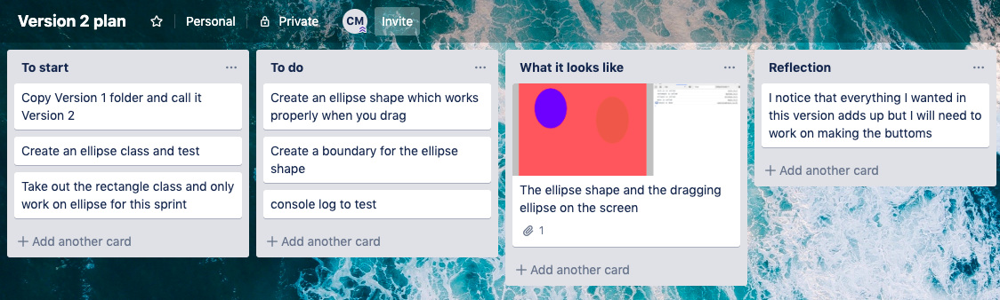

Aim:My aim is to have a defined drawing area on the canvas and create my basic code
When the user down drags in this area, the bounding box shows the boundary defined by MouseStart and current Mouse coordinates.
When the rectangle is released a coloured rectangle stays on the screen.
I have checked through my console log that I have no errors so can continue to my next sprint
Sketch planning of Version 1:
My trello planning:

Testing
This first test shows what my canvas looks like when drawing on the page, at the moment its only rectangles but will have other shapes in the following sprints.
This second test shows the console log and that it's all running properly, this second test explores how the bounding box appears when I click and drag in and out of the rectangle.
This could be a bit more user friendly by staying at the boundary if the user drags outside ,
but this is a reasonable working version for now.
Aim:My aim for this second sprint is to draw a basic ellipse shape which will enable me to use it in my future sprints
I want the user to be able to use the mouse drag and succesfully draw the ellipse shape on the page
I have one ellipse in the background and then the user can draw an ellipse when they want in a pre set colour
My trello planning:
Screenshot of what the ellipse shape looks like on the page
Testing
This first test shows how instead of the rectangle it's now the ellipse shape and it also has a boundary box
Aim:My aim for this sprint is to have a true or false statement in the console when hovering over the buttons as an indication of working buttons
In this sprint I have designed 3 rectangler buttons which enable my future webpage to have these working for the user to use.
Both the buttons'Rectangle'and 'Ellipse' work in this sprint as I have declared a shape for them but in my next sprint I will make'Circle' work
My trello planning
Screenshot of the true and false statements
Testing
This test shows how there are buttons which the user can select out of 'Rectangle', 'Ellipse' and 'Circle'. The rectangle and ellipse button works but the circle is yet to. The console log is also shown with how the button works with the true and false statements and when dragging the shapes across it has "yes it's moving"
Aim:My aim for this sprint is to have the 3 buttons working and design colour swatches which will work
When pressing on each of the buttons the colour swatches should work so the user can click and press what they want.All of the shapes work now as I have put in a 'circle.js'
In this sprint the colour swatches work when pressing them aswell as the shape buttons
My trello planning
Screenshot of my chosen colours and shapes for my canvas as an example of what the user can do
Testing
In my version 4 test I show how my colour swatches work in the console when pressed down it says true not false. All my shapes work as all their js files are in the code. The boundary box works and all the colours work correctly.
Aim:My aim for this sprint is to finalise my web page and make sure there are no faults, I want to make a boundary rectangle where the user can draw all their chosen shapes.
I plan for this sprint to be my final one and will perfect it to be a error free site
It has updated colours which suit the page well
I am going to thoroughly comment my code in this last sprint
My trello planning
Screenshot of my finalised site and colours drawn in my rectangle
Testing
In my fifth and final test I show how the rectangle is in the boundary of where you can draw the shapes and it does not allow the user to drag outside of this. In this clip it also shows my console log which has nothing showing anymore. The user can succesfully use any of the shapes and colours to decorate the canvas as they desire
Relevant Implications
Future Proofing
Program is designed so new features can be added easily and old ones removed
- - It has been adressed in the way the program has been designed.
- -Project elements( colours, buttons, shapes) have all been programmed as objects,
means each object is a self-contained, modular piece of code,
that takes a defined set of parameters to work,(may take basic mouse data and color)
- - Many objects take basic mouse date startDrag and current position and a colour to be implemented
- - All objects are built to a similar structure and compulsory contain an update function which means they can appear on the interface using the update call,
management of most of the objects happens in a central place (control object)
- -The idea is that an experienced programmer would easily be able to remove elements or add new features,
comments are also precise and informative.
- - I have thoroughly commented my code to give further guidance
Functionality
Does the program work well? Is it free of bugs? loads quickly? works on different browsers? have we addressed this?
- -Program is pure javascript, has no graphics, so loads very quicky
- -I have tested by using a live web server to store my versions and have observed loading performance
- - To ensure the program works well I have systematically tested it, tested user interactions (position of clicking and direction of dragging. This has included careful checks around boundaries.
- -The use of the Math.abs function was discovered after testing failures drawing circular shapes(because these objects where being given negative radius values).
- -Any new components were tested prior to being added to the main program.
- -At various stages in sprints, console logging was used to analyze boundary test functions, and locate problems when bugs appeared.
Examples of Trialing and Making Decisions
Can you find examples of exploring different options and making a decision about which is the best solution?
- - When deciding on how big the swatches and buttons were trialling on what x,y,w,h coordinates fit to make the canvas look the best
- - Discovering through the size of the rectangle and position of the swatches that I couldn't make the canvas anything but 800px as making it 900px didn't allow it to be in line with the colour swatches
- - What the best way was to do the colour buttons (which was by loops)
- - Was about to make a line.js but then decided that the circle shape looked a lot cleaner on the canvas
Effectively using information from testing and trialing to improve the functionaility of the outcome.
- - Trialling different color themes
- - Trialling the different shapes such as ellipse and circle
- - Changing the transparency of the colors
- - Look too similar
- - Trialling drawing process on picture canvas to make sure they don't go off the edge or on different parts of the screen
- - Changing the colour scheme (which ones go together)
- - Adjusting the rgb col array to the desired colours
How did your working process(planning, testing, trialing)lead to the development of a high-quality digital outcome? How was the Agile process helpful?
- - Allowed planning and development to happen together
- - Created repeated cycles of plan - develop - test.
- - Broke the development stage into parts so was easy to work through one step at a time
- - Most essential thing I needed to do was to test in the console log along the way so I had the idea everything was running smoothly
- - After two or three sprints I got a much better idea of what I could achieve and my aims became much more focused and realistic
- - This project was hard to start with as it took time to get familiar with visual studio code but I learnt it along the way
The first steps towards making my webpage are these Basic Drawings, Interactions, Functions and Animations
These are all my beginning codes which have some working shapes and were the steps to lead up to my sprints